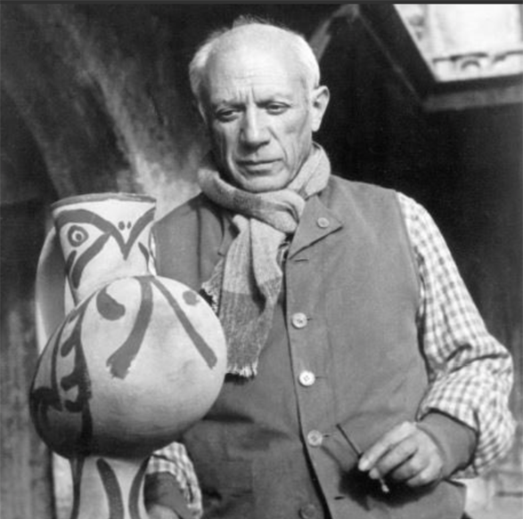
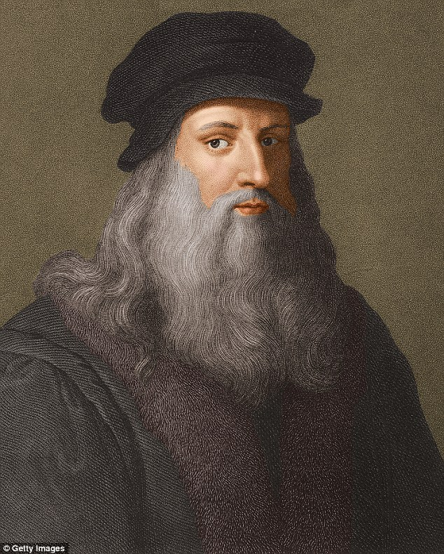
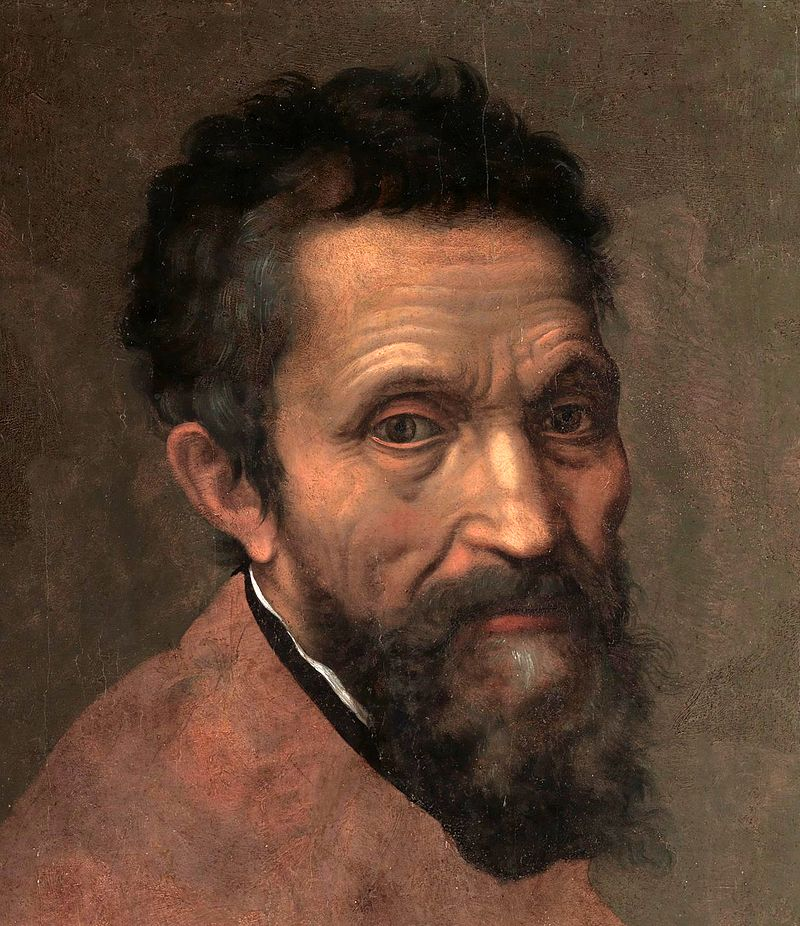

أشهر الرسامين

١- بابلو بيكاسو :
رسام ونحات وفنان تشكيلي إسباني وأحد أشهر الفنانين في القرن العشرين وينسب إليه الفضل في تأسيس الحركة التكعيبية في الفن.
غالباً ما يتم تصنيف أعمال بيكاسو على فترات، وعلى الرغم من اختلاف أسماء تلك الفترات إلا أن الشائع عن تقسيم أعمال بيكاسو هو:
الفترة الزرقاء (1901 – 1904).
الفترة الوردية (1905 – 1907).
فترة الأفريقية (1908 – 1909).
المرحلة التكعيبية التحليلية (1909 – 1912).
المرحلة التكعيبية التركيبية (1912 – 1919).
من أشهر أقواله : الفن هو الكذبة التي تجعلنا نكتشف الحقائق.
أعماله البارزة :
غرنيكا
حياة ساكنة مع الجيتار
مقبرة تشارنيل
ولقد حصل على جائز لينين للسلام عام 1962م

٢-ليوناردوفينشي
كان موسوعيًا ينتمي إلى عصر النهضة حيث كان رسامًا، مهندسًا، عالم نبات، عالم خرائط، جيولوجيًا، موسيقيًا، نحاتًا، معماريًا وعالمًا إيطاليًا مشهورًا. ولأنه كان رجلًا عبقريًا ذا موهبة عالمية في عصر النهضة فقد جسد روح عصره كاملًا مما أدى ذلك إلى اكتشاف كبار نماذج التعبير في مختلف مجالات الفن والمعرفة. ويعتبر أحد أعظم عباقرة البشرية[5] ربما عبقريته التي ميزته أكثر من أي شخصية أخرى .
في بداية حياته كان فنه يوازي فن معلمه فيروتشيو إلا أنه شيئًا فشيئًا استطاع أن يخرج من كنف فيروتشيو ليحرر نفسه من أسلوب معلمه الصارم والواقعي تجاه الرسم فكان ليوناردو في أسلوبه وإبداعه يخلق رسومات تلامس الأحاسيس والذكريات.
أعماله البارزة :
لوحة الموناليزا
الرجل الفيتروفي
العشاء الاخير

٣-فنسنت فان جوخ
الانطباعي الذي عانى اضطراب ثنائي القُطب وانتحر في سن السابعة والثلاثين،
خلَّف ورائه أكثر من ألفي لوحة واسكتش. وهو عدد ضخم مقارنة بحياته القصيرة.
فان جوخ اليوم أحد أشهر الرسّامين وأحد أهم روّاد الانطباعية التي مهدت لظهور الفن الحديث ككل.
وتعتبر لوحته "ليلة النجوم
إحدى أشهر اللوحات في التاريخ وإحدى أشهر لوحاته ككل. تعتمد اللوحة، التي رسمها عام 1889،
على اللون الأزرق والأصفر والأبيض بدرجاتهم، كما اعتمدت ضربات حادة ومتقطعة للفرشاة. واعتبرها الأطباء بمثابة رسالة انتحار؛ لأن فان جوخ رسم فيها شجرة سرو تربط بين الأرض والسماء.
وقد عُرف شجر السرو في تلك الفترة بأنه شجر المدافن والمقابر.

٤-مايكل آنجلو
هو النحات والمعماري والرسّام الإيطالي. وهو أحد أبرز فنانين عصر النهضة بعد دافنشي. ركزت لوحاته ومنحوتاته بالجسد البشري عاريًّا. أظهرت جميع أعماله جهدًا وموهبة جبارة، ركز على رسم الميثولوجيا والحكايات الدينية،
وترك إرثًا فنيا خالدًا ولعل أبرزه هو لوحته "خلق آدم
اللوحة هي واحدة من سلسلة من اللوحات الجصية التي زينت سقف كنيسة سيستينا؛
أكبر كنيسة في القصر البابوي في الفاتيكان. والسلسلة تصور جميع مراحل سفر التكوين. وفي اللوحة،
يهب الرب الحياة لآدم عبر نفس إلهي متمثل في لمسة من أطراف الأصابع. بالرغم من أن اللوحة ليست الوحيدة في السلسلة التي تصور عملية الخلق إلا أنها صارت أيقونية وإحدى أشهر اللوحات في التاريخ تعبيرًا عن خلق الإنسانية